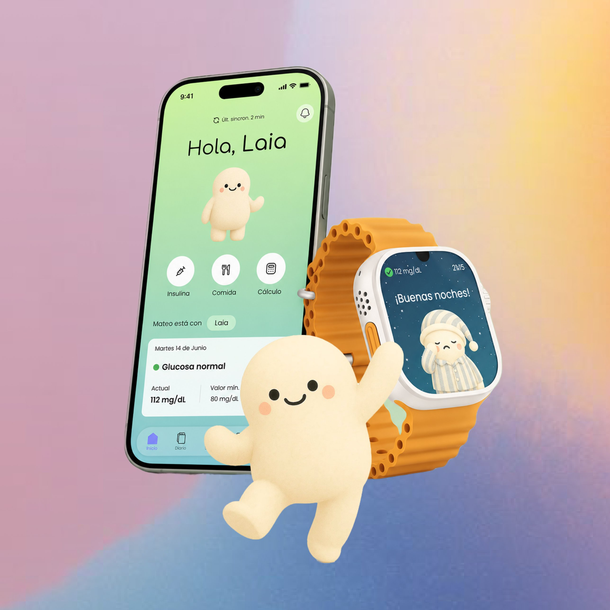
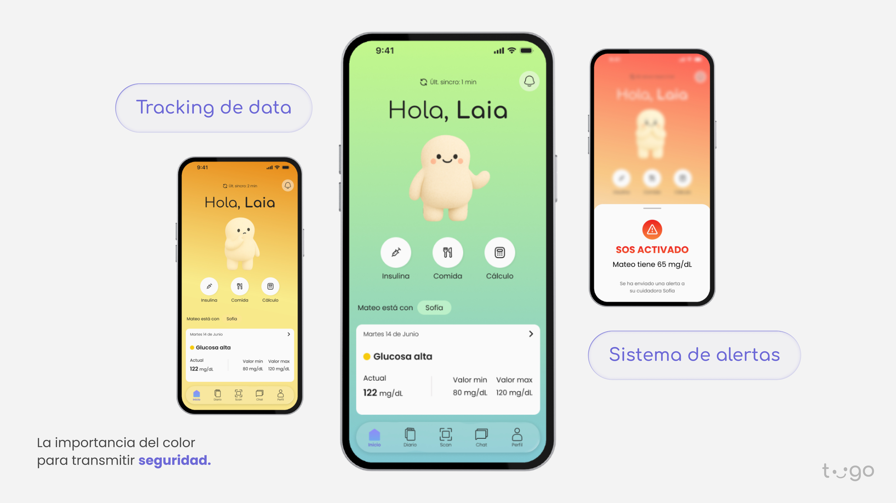

Product · Healthtech
Tugo
A smart support system that blends technology and emotional care for children with chronic illnesses, like type 1 diabetes, and their families — usable at home or on the go, built to grow a child's independence while giving caregivers peace of mind.

Overview
Project’s core
Tugo’s core job is daily, practical support — at home and on the go — that helps a child manage their condition with more independence, while giving the adults around them real confidence rather than constant worry.
Gallery


The problem
Type 1 diabetes in children isn’t just a medical condition to manage; it’s a daily negotiation between a child’s growing independence and an adult’s need to feel reassured.
- 1.5M+Children live with type 1 diabetes worldwide (IDF Diabetes Atlas, 2021)
How can technology give a child more independence while giving the adults around them confidence instead of constant worry?
Process
- 01
Benchmark
Looked across digital support apps for families, shared-monitoring tools, educational devices for children, and inclusive, adapted storytelling formats.
- 02
User research
Interviewed five participants to surface frustrations and preferences. One team member spent time using a continuous glucose monitor (CGM) firsthand to understand what constant tracking actually feels like. Benchmarked direct and indirect competitors across web and app.
- 03
Insights
Interviews with caregivers, medical professionals and children with diabetes, plus a team member’s firsthand time with a glucose monitor, pointed to one design question: how can a child gain independence while the people around them gain confidence?
Results
Design system
Built a reusable design system that carries the whole product experience across mobile and watch.
My scope
End to end, as product and visual designer: research, user flows, UX, visual design, the design system and implementation.
Validation
Tested the experience with users through usability testing and iterated the design on what the sessions showed.
Recognition
Awarded Best Product & Service Design at the ELISAVA Master Awards 2025.